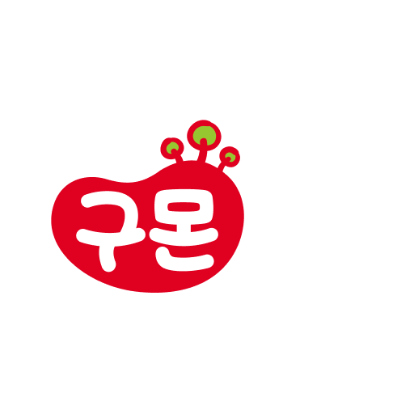

처음 문의부터 첫 수업 준비까지
필요한 안내를 차례대로 확인해 보세요.
'누적 학습자 890만명'이 증명한 구몬, 그 비밀은?
화상학습 vs 셀프학습, 나에게 맞는 학습방식은?
과목별 특장점, 교재 구성, 회비가 궁금하다면?
주 1회 1:1 맞춤 화상관리 + 데일리 학습 케어, 데이터 기반 관리까지!
자학자습 + 데일리 학습 케어, 데이터 기반 관리까지!
주 1회 1:1 맞춤 화상관리 + 부담 없이 시작, 갓성비 외국어 학습!
※ 원활한 학습 안내를 위해 제작한 임시 안내 페이지입니다.